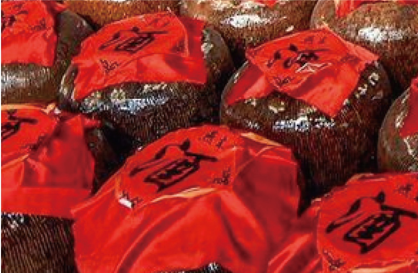
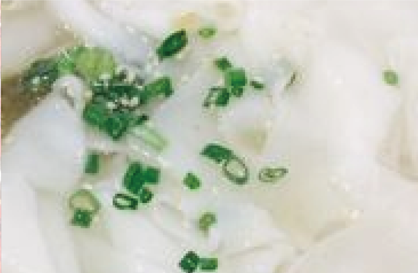
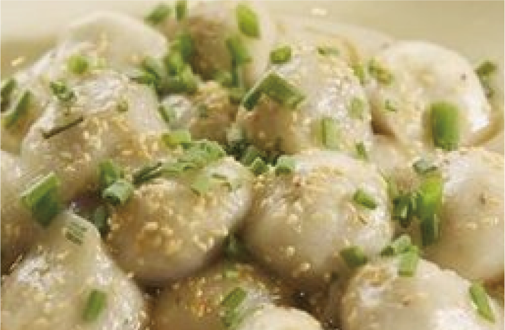
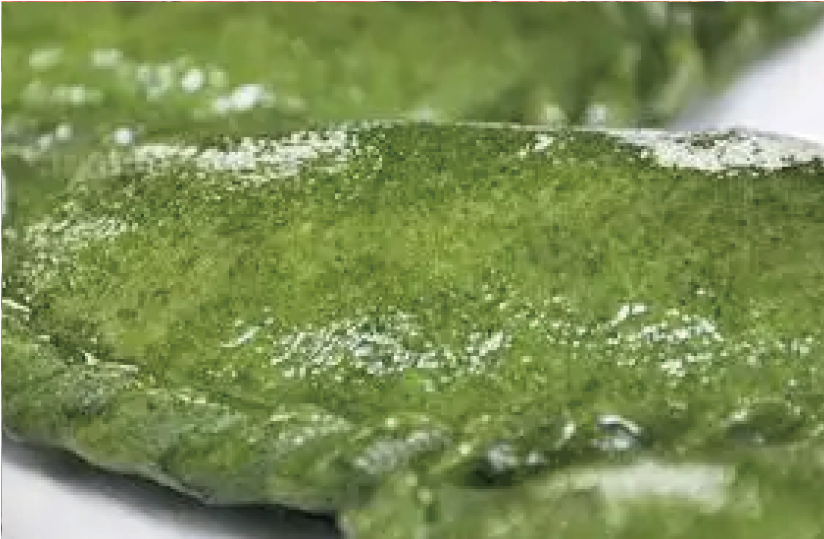
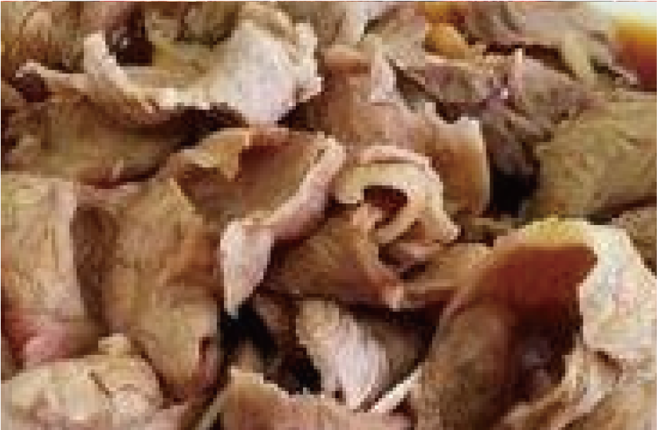
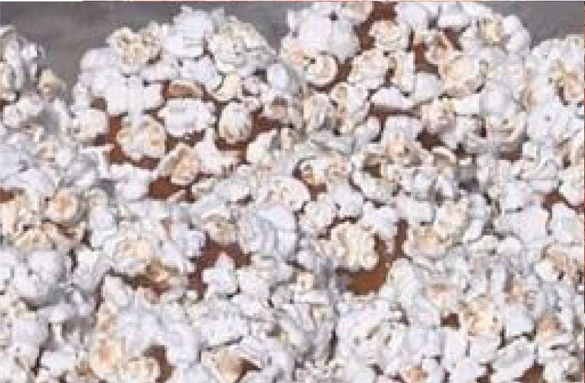

美食特产

吉山老酒
福建永安吉山老酒又名“吉山红”，因产于永安吉山乡而得名，是永安有名的一大特产。吉山老酒精选上等糯米为主要原材料，采用独特的制酒工艺，精心酿制而成，酒制成后需窑藏三冬方可饮用，所以又称“三冬老酒”。永安吉山老酒酒香浓郁，酒味甘美醇厚，而且营养价值很高。

粿条
永安的著名小吃，是把稻米磨浆蒸熟而制成的，吃法多种多样。最普遍的吃法是把果条用开水烫过之后放入骨头汤中做成汤粉；也可以配上菜和肉炒来吃。也有把果条卷成筒状，用叉子叉着蘸酱油吃的，这样的果条叫“果条筒”或“叉叉果”。


芋包
软润香滑的永安民间传统小吃,芋包的主料为菜芋和木薯粉。其制法是将菜芋和洗净入锅煮熟去皮后，与木薯粉揉搓至软硬适度不粘手，做成芋包坯，包上瘦肉、香菇、笋、虾米、酱油、五香粉炒熟的馅，置入沸水中煮到膨胀着浮出水面。再蘸酱油，老洒，猪油，味精，葱花等调料即可食用。

艾馃
选用艾草和大米蒸熟融合，放入各种熟馅料，吃起来营养美味，主打咸甜两种味道，能够去湿气，对男女老少都有好处。

活肉
活肉用的是猪脸上靠近上唇的部位，因为猪成天吃，全身上下数这个部位运动量大。且瘦中带肥，不柴不腻。做法是简单的生烫，烹调时间短，肉汁损失少，看似粗浅，其实大有讲究。蘸水是简单的永安黄椒和生抽，把鲜味提出来的同时再给人意外的刺激。

老虎蛋
因表面由万朵爆花粘成一朵，状如梅花团之美，称之为“镂花蛋”，而青水畲族乡的土语“镂花蛋”与老虎蛋谐音，便被当地人称之为“老虎蛋”。将地瓜和糯米粉揉在一起，包上花生米等馅料，涂上麦芽糖，然后裹上爆米花，一份香甜可口的老虎蛋就做好了，十分具有风味。